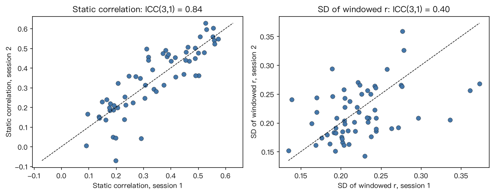

Example11 / 11
动态指标的重测信度（ICC）
模拟 60 名被试、每人两次扫描。每人有一个稳定的“真实特质”：静态连接强度 ρ_s 与“动态性”（连接随时间变化的幅度）。 每次扫描计算：(a) 整段静态相关；(b) 滑动窗口相关的标准差（常用的动态指标）。 用 ICC(3,1)（一致性、双向混合效应）比较两类指标的重测信度。 输出解读：在同样的数据量下，静态相关的 ICC 明显高于窗口相关标准差—— 后者受有限样本波动影响大（参见“有限样本波动”一节），需要更长扫描或模型化估计（如 DCC）。
Output输出图

Output文字输出
静态相关的 ICC(3,1) = 0.84 窗口相关标准差的 ICC(3,1) = 0.40 窗口相关标准差与真实波动幅度的相关 = 0.52
Code代码
# 模拟 60 名被试、每人两次扫描。每人有一个稳定的“真实特质”：静态连接强度 ρ_s 与“动态性”（连接随时间变化的幅度）。
# 每次扫描计算：(a) 整段静态相关；(b) 滑动窗口相关的标准差（常用的动态指标）。
# 用 ICC(3,1)（一致性、双向混合效应）比较两类指标的重测信度。
# 输出解读：在同样的数据量下，静态相关的 ICC 明显高于窗口相关标准差——
# 后者受有限样本波动影响大（参见“有限样本波动”一节），需要更长扫描或模型化估计（如 DCC）。
import numpy as np
from numpy.lib.stride_tricks import sliding_window_view
rng = np.random.default_rng(21)
S, T, w = 60, 600, 40
rho_s = rng.uniform(0.1, 0.6, S) # 被试的静态连接
amp_s = rng.uniform(0.0, 0.35, S) # 被试的连接波动幅度
def ar1(e, phi=0.6):
out = np.zeros_like(e)
for t in range(1, e.shape[-1]):
out[..., t] = phi * out[..., t - 1] + e[..., t]
return out
def session(rho, amp):
rt = np.clip(rho + amp * np.sin(2 * np.pi * np.arange(T) / 150 + rng.uniform(0, 6.3)), -0.95, 0.95)
z = rng.standard_normal((2, T))
x = z[0]; y = rt * z[0] + np.sqrt(1 - rt ** 2) * z[1]
X = ar1(np.vstack([x, y]))
xw = sliding_window_view(X[0], w); yw = sliding_window_view(X[1], w)
xc = xw - xw.mean(1, keepdims=True); yc = yw - yw.mean(1, keepdims=True)
r = (xc * yc).sum(1) / np.sqrt((xc ** 2).sum(1) * (yc ** 2).sum(1))
return np.corrcoef(X)[0, 1], r.std()
def icc_3_1(Y):
"""Y: (被试数, 测量次数)。ICC(3,1) = (MS_R − MS_E) / (MS_R + (k−1) MS_E)。"""
n, k = Y.shape
gm = Y.mean()
ms_r = k * ((Y.mean(1) - gm) ** 2).sum() / (n - 1)
ms_c = n * ((Y.mean(0) - gm) ** 2).sum() / (k - 1)
sse = ((Y - gm) ** 2).sum() - ms_r * (n - 1) - ms_c * (k - 1)
ms_e = sse / ((n - 1) * (k - 1))
return (ms_r - ms_e) / (ms_r + (k - 1) * ms_e)
res = np.array([[session(rho_s[s], amp_s[s]) for _ in range(2)] for s in range(S)]) # (S, 2, 2)
print(f"静态相关的 ICC(3,1) = {icc_3_1(res[:, :, 0]):.2f}")
print(f"窗口相关标准差的 ICC(3,1) = {icc_3_1(res[:, :, 1]):.2f}")
print(f"窗口相关标准差与真实波动幅度的相关 = {np.corrcoef(res[:, 0, 1], amp_s)[0, 1]:.2f}")
import matplotlib.pyplot as plt
fig, axes = plt.subplots(1, 2, figsize=(10, 4))
for ax, j, lab in [(axes[0], 0, "Static correlation"), (axes[1], 1, "SD of windowed r")]:
ax.scatter(res[:, 0, j], res[:, 1, j], s=40, color="#4477AA", edgecolor="k", lw=0.3)
lo, hi = res[:, :, j].min(), res[:, :, j].max()
ax.plot([lo, hi], [lo, hi], "k--", lw=0.8)
ax.set(xlabel=f"{lab}, session 1", ylabel=f"{lab}, session 2", title=f"{lab}: ICC(3,1) = {icc_3_1(res[:, :, j]):.2f}")
plt.tight_layout(); plt.show()Run在浏览器中运行
首次加载 Python 环境约需 20–40 秒；可以修改参数后重新运行。